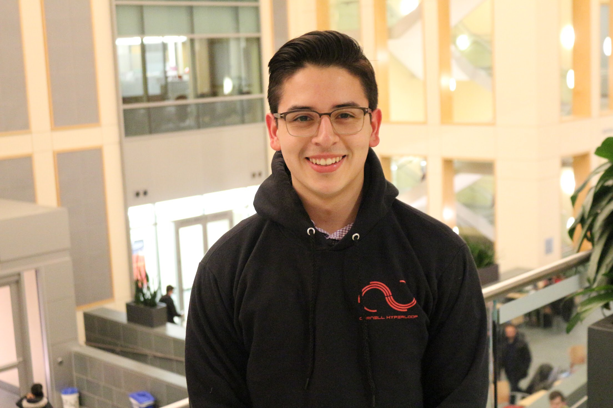

Luis Londoño Ramos
📍 Bayside, New York
Challenge-seeking, 4th year undergrad with 2 summers of internship
experience. Looking for high-impact projects to join and apply my
fullstack background.
Below are snapshots of my work 💻 for you to get a better idea💡 of who I am, what I do and what I’m passionate about!
Below are snapshots of my work 💻 for you to get a better idea💡 of who I am, what I do and what I’m passionate about!
Cornell University, College of Engineering
B.S. Computer Science (2020)
Minors: Business, Operations Research
Relevant Coursework
Practicum in Operating Systems, Algorithms, Object Oriented Programming, Artificial Intelligence, Linear Programming, Discrete Structures, Linear Algebra, Swift Development, Computer Organization, Unix tools and Scripting, Financial Accounting & Valuation of Capital Investment, Spreadsheet-Based Modeling and Data Analysis
Skills
Contact Me